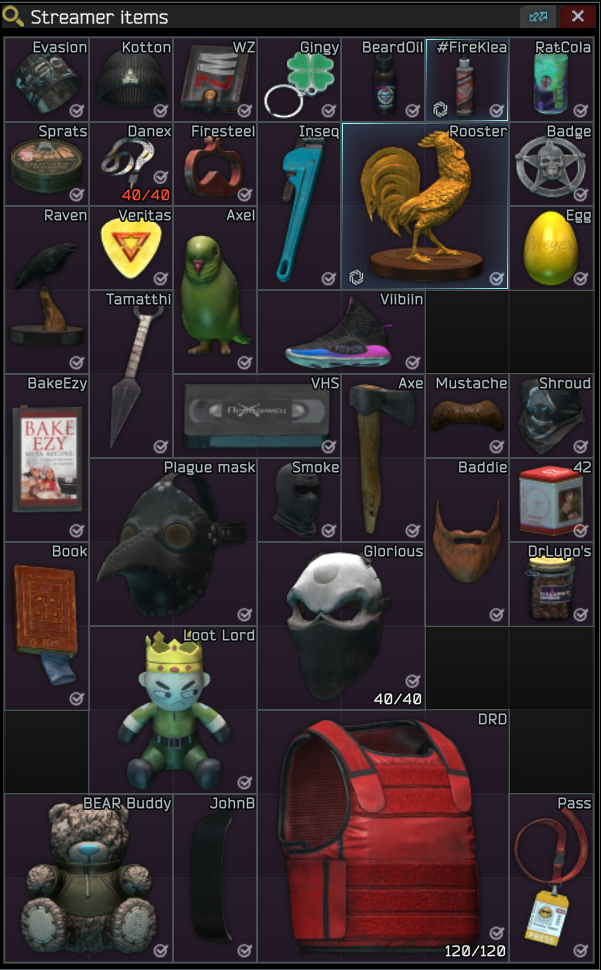

Example Screenshots
Trader Task List (e.g., Prapor)

Ensure the task names are clearly visible.
Kappa Items (Collector Quest / Inventory)
Show the items needed for the "Collector" quest.
Tip: You can paste images directly from your clipboard or drag & drop onto sections!
For Trader Task sections (Prapor, Therapist, etc.): Upload a screenshot of that trader's task list page from in-game. The tool will try to identify completed tasks.
For the Kappa Items section: Upload a screenshot of the Kappa items in your inventory/stash.
We currently only handle english for tasks.